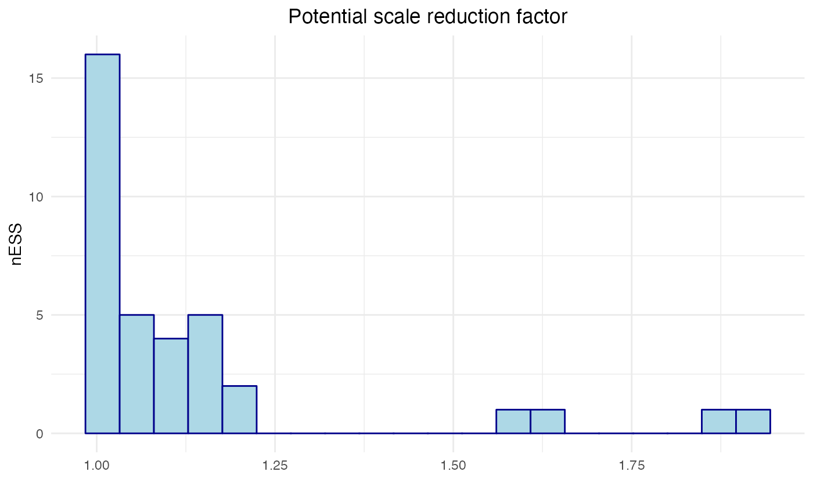
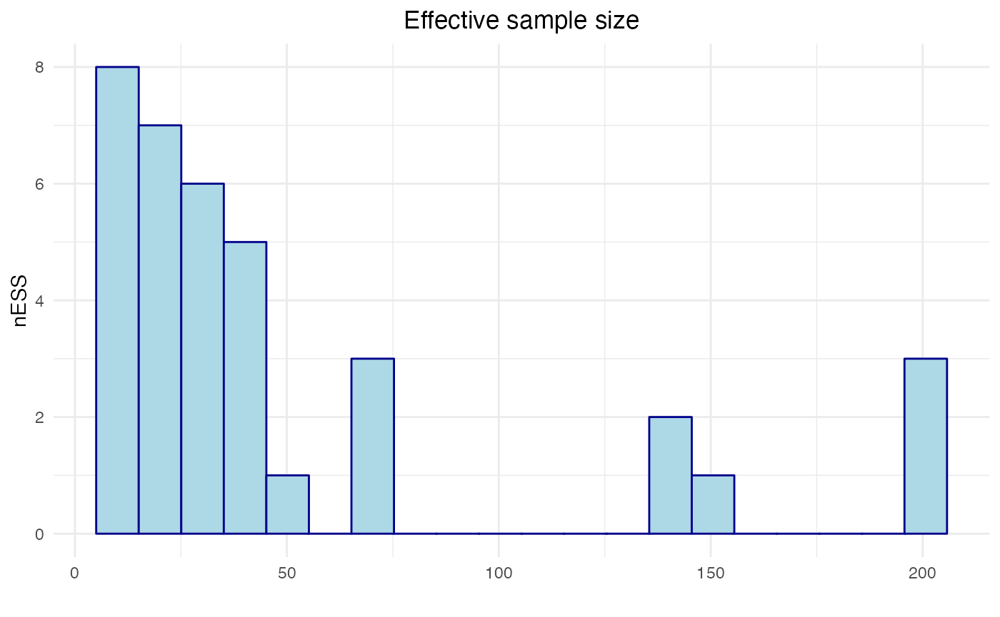
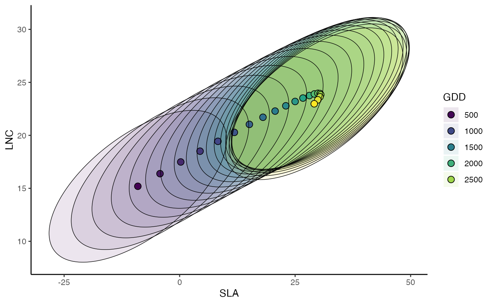
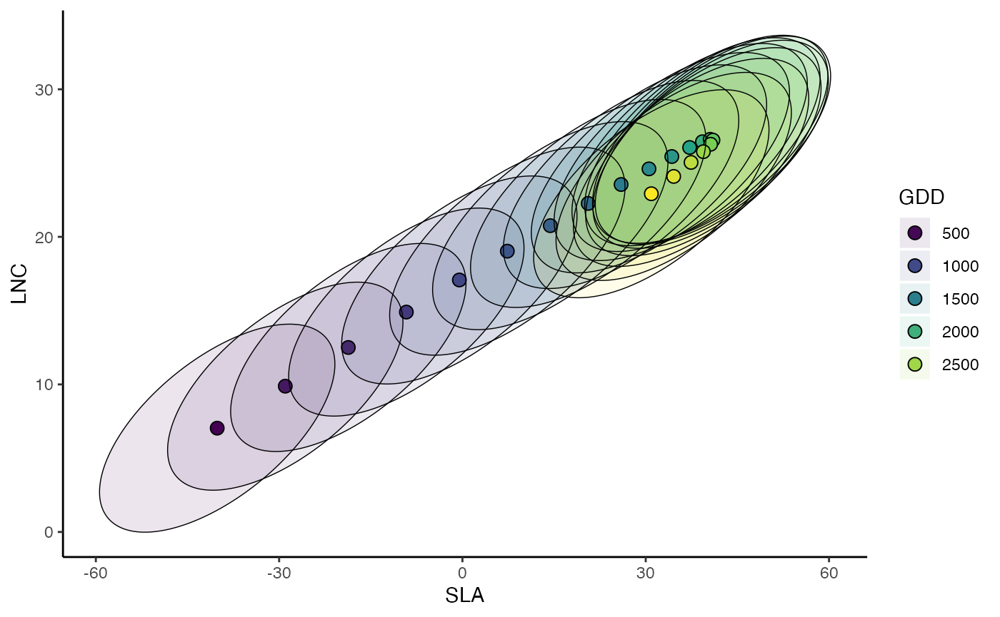
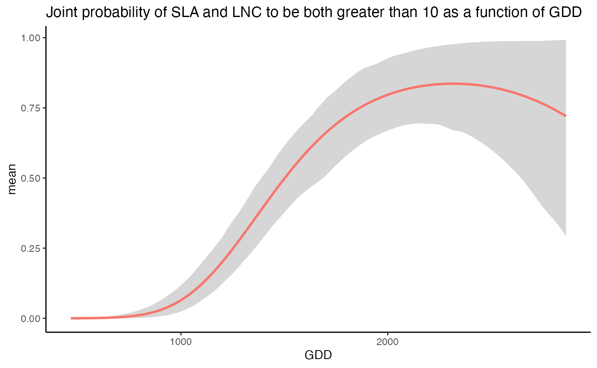

In this vignette we explain how to fit, evaluate and interpret a joint trait distribution model (JTDM). We refer to Poggiato et al., in prep. “Joint models and predictions of community traits” for the full description of JTDMs, and we rather focus here on presenting the R package by applying it to the dataset of the case study presented in the publication.
The package implements JTDMs using the Markov Chain Monte Carlo (MCMC) Bayesian modeling software JAGS via the R package runjags. Therefore, it requires the installation of JAGS. Its installation is easy and depends on your operating system:
https://sourceforge.net/projects/mcmc-jags/files/JAGS/4.x/Mac%20OS%20X/
Once JAGS has been installed, the following code should run:
JTDMs relate a vector of average community traits (e.g. community weighted mean, CWM) to a vector of environmental covariates. The matrix Y contains the CWM traits of specific leaf area (SLA), leaf nitrogen content (LNC) and plant height of 116 plant community sites situated along 21 elevational gradients (www.orchamp.osug.fr) in the French Alps.
data(Y)
summary(Y)
#> SLA LNC Height
#> Min. : 3.857 Min. :14.86 Min. :10.80
#> 1st Qu.:13.225 1st Qu.:19.71 1st Qu.:23.49
#> Median :16.349 Median :21.42 Median :35.39
#> Mean :20.500 Mean :22.06 Mean :34.87
#> 3rd Qu.:21.923 3rd Qu.:23.88 3rd Qu.:44.17
#> Max. :66.664 Max. :34.30 Max. :76.38We consider two environmental covariates: Growing Degree Days (GDD, the sum of temperature of days with positive temperature in the growing season) to represent the average length and intensity of the growing season and intensity of freezing events (Freezing Degree Days, the sum of temperature of days with negative temperature in the growing season, FDD). To account for habitat type, we included a variable that was set to 1 when the site was in a forest, 0 otherwise (hereafter habitat). These data are stored in the matrix X.
data(X)
summary(X)
#> GDD FDD forest
#> Min. : 467.4 Min. :-36.838 Min. :0.0000
#> 1st Qu.:1037.3 1st Qu.:-14.768 1st Qu.:0.0000
#> Median :1320.7 Median :-11.520 Median :0.0000
#> Mean :1357.6 Mean :-12.758 Mean :0.3621
#> 3rd Qu.:1684.9 3rd Qu.: -9.461 3rd Qu.:1.0000
#> Max. :2861.5 Max. : -2.522 Max. :1.0000JTDMs infer a linear regression for each CWM trait as a function of the environmental covariates, together with an inter-traits residual covariance matrix. Therefore, the parameters of a JTDM are the regression coefficients \(B\) and the residual covariance \(\Sigma\). Notice that inferring a generalized linear model is possible, even thus not yet implemented in our package. The inference of JTDM is implemented in the Bayesian framework (using JAGS) by the function jtdm_fit. The syntax of the function is similar to the popular function lm. This function requires the response matrix Y, the predictor matrix X and a (right-hand only) formula to specify how CWM traits depends on environmental variables. MCMC parameters are custom, details are described in ?rjags. We choose here to include in the model linear and quadratic terms (using orthogonal polynomials) of GDD and FDD in interaction with habitat to enable non linear trait-environment relationships and to allow for different trait-environment relationships in forest and open habitats. The is relatively fast, however, to ensure that the whole vignette runs fast, we only run short MCMC chains here, for the sake of the example. To obtain reliable results, the MCMC should be ran for a higher number of iterations.
# Short MCMC to obtain a fast example: results are unreliable !
m = jtdm_fit(Y=Y, X=X, formula=as.formula("~poly(GDD,2)+poly(FDD,2)+poly(GDD,2):forest+poly(FDD,2):forest"), adapt = 10, burnin = 100, sample = 100, n.chains = 2)Once the model has ran, we should check for the convergence of the MCMC chains.
# Potential scale reduction factor
table=data.frame(x=gelman.diag(m$model$mcmc,multivariate = FALSE)$psrf[,1])
ggplot(data = table, aes(x=x)) + geom_histogram(color="darkblue", fill="lightblue",bins = 20) +
ggtitle("Potential scale reduction factor") + xlab("") + ylab("nESS") + theme_minimal() + theme(plot.title = element_text(hjust = 0.5))
# nESS
table=data.frame(x=effectiveSize(mcmc(as.mcmc(m$model))))
ggplot(data = table, aes(x=x)) + geom_histogram(color="darkblue", fill="lightblue",bins = 20) +
ggtitle("Effective sample size") + xlab("") + ylab("nESS") + theme_minimal() + theme(plot.title = element_text(hjust = 0.5))
Since we ran the JTDM with very short chains, the MCMC has not converged. You can try to run the model with longer chains and check its convergence.
We can now look at the inferred the regression coefficients. The getB function provides the MCMC samples of the regression coefficients matrix \(B\), together with its mean, and \(95\%\) credible interval.
# Inferred parameters
B=getB(m)get_sigma provides instead the MCMC samples of the residual covariance matrix \(\Sigma\) together with its mean and \(95\%\) credible interval.
Sigma=get_sigma(m)$SmeanWe can predict CWM traits on a (new) set of sites using jtdm_predict. Here, we predict on the training dataset and compute goodness of fit measures of these predictions like \(R^2\) and RMSE, by setting validation=TRUE. We can choose whether to obtain the full posterior predictive distribution (FullPost=TRUE which is more time consuming) or just its posterior mean (FullPost=FALSE, which we advice if the aim is to only compute goodness of fit measures).
predictions = jtdm_predict(m,Xnew=X,Ynew=Y,validation=T, FullPost=F)
predictions$R2
#> SLA LNC Height
#> 0.5806251 0.3443389 0.5205672
predictions$RMSE
#> SLA LNC Height
#> 7.670742 2.819203 9.136419We can evaluate the performances of the model using a K-fold cross-validation using the function jtdmCV
predictionsCV = jtdmCV(m,K=5)
predictionsCV$R2
#> SLA LNC Height
#> 0.5210303 0.2208646 0.4275789
predictionsCV$RMSE
#> [1] 9.289222 3.390048 9.851340We can now analyse the inferred trait-environment relationships using the function partial_response, that computes and plots the partial response curve of a focal trait along a focal environmental gradient. This function takes as input the model m, the focal environmental variable indexGradient and the focal trait indexTrait, using the names of environmental variables and traits as specified in the column names of X and Y respectively. The function builds a dataset of environmental variables by building the gradient of the focal environmental variable and keeping all other variables fixed to their mean. Then, it predicts the marginal distribution of the focal trait for the so-built environmental dataset. The user can choose whether to obtain the full predictive distribution (FullPost=TRUE), or the predictive distribution of the mean term (FullPost="mean", which we advice here), or just the posterior mean (FullPost="mean"). The function outputs are the plot of the inferred trait-environment relationship and the predictions of the model (used to produce the plot). For example, we can plot the partial response curve relationship between SLA and GDD
partial_response(m,indexGradient="GDD",indexTrait="SLA")$p
The user can eventually provide a given gradient for the focal environmental variable XFocal (which is otherwise built on regual grid with length given by grid.length). The user can also choose to fix the non focal environmental variables to another value. For example, we can obtain the partial response curve of SLA and GDD in forest
partial_response(m,indexGradient="GDD",indexTrait="SLA",FixX=list(GDD=NULL,FDD=NULL,forest=1))$p ## Multivariate confidence intervals
We can then compute the partial response curves of pairwise CWM trait combinations together with their \(95\%\) credible region, what we define in the publication as the most suitable CLS and envelop of possible CLSs. This is done by the function ellipse_plot, that takes as input the model m, the focal environmental variable indexGradient and the two focal traits indexTrait, using the names of environmental variables and traits as specified in the column names of X and Y respectively. The function builds a gradient of the focal environmental variable while keeping all other variables fixed to their mean, and then predict and plots the joint distribution of the focal traits. The user can choose whether to obtain the full predictive distribution (FullPost=TRUE), or the predictive distribution of the mean term (FullPost=F, which we advice here to obtain smoother curves).
# plot the pairwise SLA-LNC partial response curve along the GDD gradient
ellipse_plot(m,indexTrait = c("SLA","LNC"),indexGradient="GDD")
The user can also choose to fix the non-focal environmental variables to another value. For example, we can obtain the partial response curves of the most suitable CLS and envelop of possible CLSs of SLA and GDD in forest.
# plot the pairwise SLA-LNC partial response curve along the GDD gradient
ellipse_plot(m,indexTrait = c("SLA","LNC"),indexGradient="GDD",FixX=list(GDD=NULL,FDD=NULL,forest=1))
The jtdm package allows to define a region in the community-trait space and compute their joint probabilities for a given set of environmental conditions. This is done by the function joint_trait_prob. To define a given region in the community-trait space, the user has to define the focal traits indexTrait (any number of traits is accepted) and trait-specific tresholds through the parameter bounds. bounds is a list of the length of indexTrait, where each element of the list is a vector of length two. The vector represents the inferior and superior bounds of the region for the specified trait. For example, if we consider two traits (e.g. SLA and LNC), bounds=list(c(20,Inf),c(20,Inf)) corresponds to the region in the community-trait space where both SLA and LNC both take values greater than 20. We can then define the sites (i.e. the set of environmental conditions) in which to compute joint probabilities. For example we can compute joint probabilities of both SLA and LNC to be greater than 20 in a high altitude site. This measures the relative suitability of communities where both SLA and LNC are higher than 20 in a high altitude site.
joint_trait_prob(m,indexTrait=c("SLA","LNC"), Xnew=X["VCHA_2940",], bounds=list(c(20,Inf),c(20,Inf)))$PROBmean
#> 1
#> 0.0861943Unsurprisingly, the probability is low. Then, we compute how this probability vary along the GDD gradient using the function joint_trait_prob_gradient. The function builts a dataframe where the focal variable varies along a gradient and the other (non-focal) variables are fixed to their mean (but see FixX parameter for fixing non-focal variables to user-defined values) and predict the joint probabilities along the gradient.
joint=joint_trait_prob_gradient(m,indexTrait=c("SLA","LNC"), indexGradient="GDD", bounds=list(c(mean(Y[,"SLA"]),Inf),c(mean(Y[,"SLA"]),Inf)))We can then plot such predictions.

As climatic conditions become more favorable (i.e. GDD increases), the probability of having high values of both traits increases.
This package is currently developed by Giovanni Poggiato from Laboratoire d’Ecologie Alpine. It is supported by the ANR GAMBAS. The framework implemented in this package is described in: Joint modeling and predictions of community traits. Poggiato Giovanni, Gaüzere Pierre, Martinez Almoyna, Camille, Deschamps, Gabrielle, Renaud, Julien, Violle, Cyrille, Münkemüller, Tamara, Thuiller, Wilfried. In preparation.